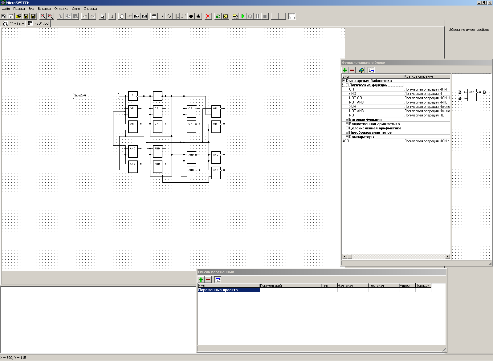
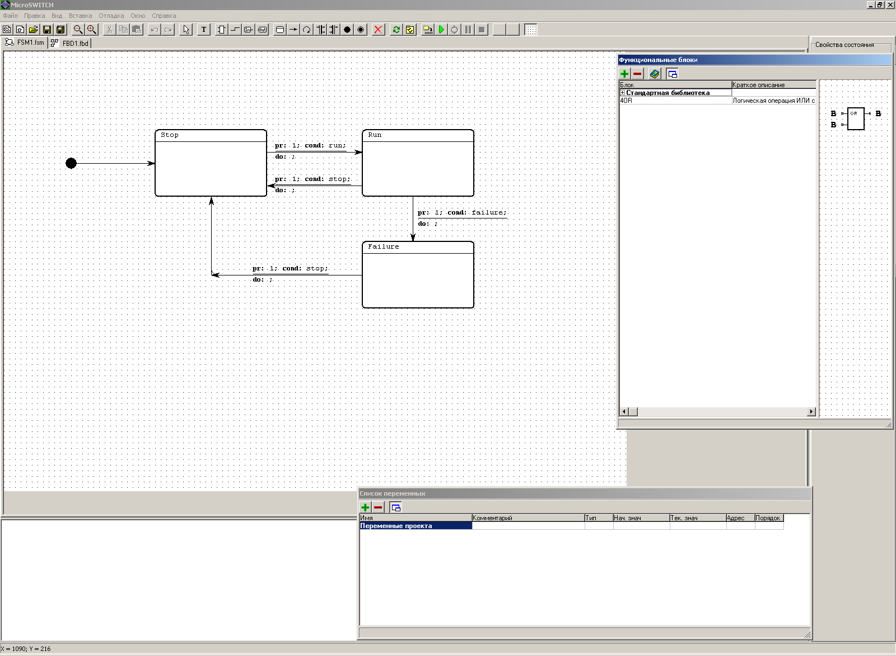
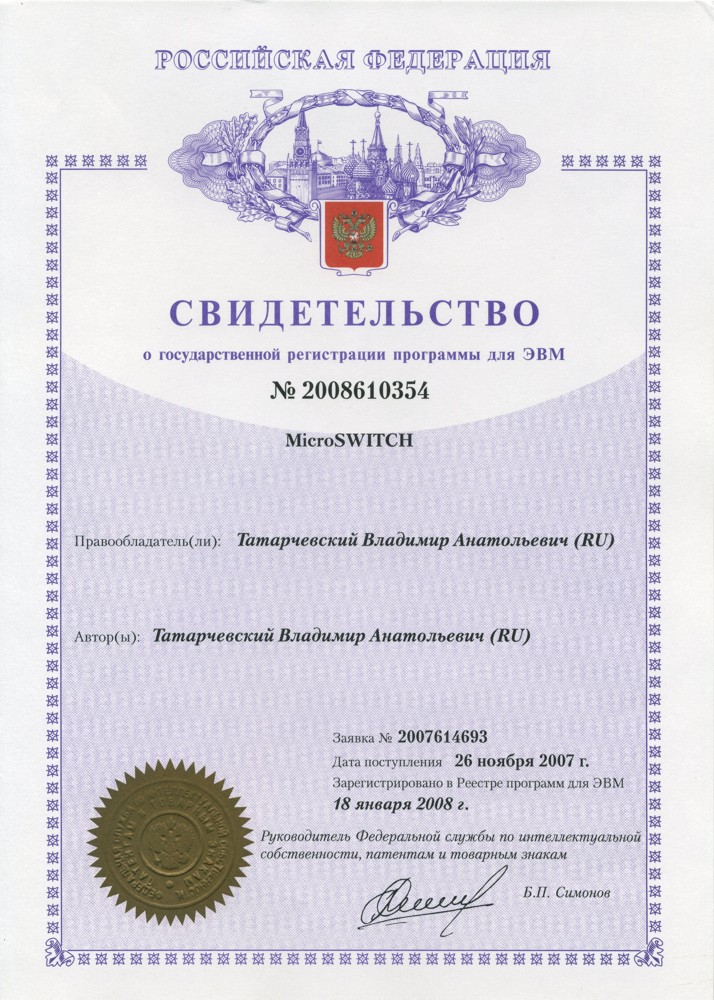
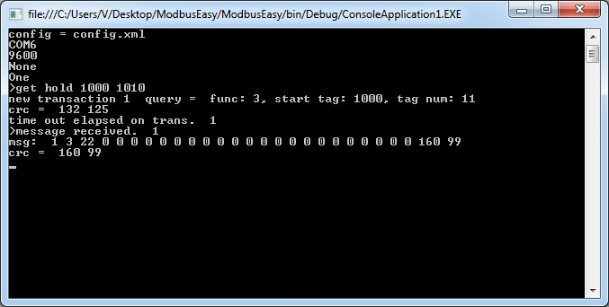
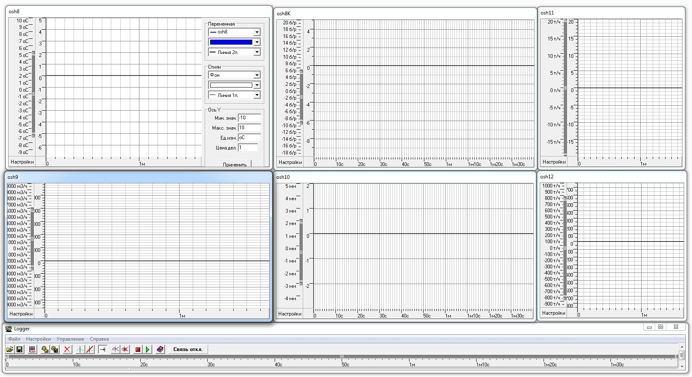
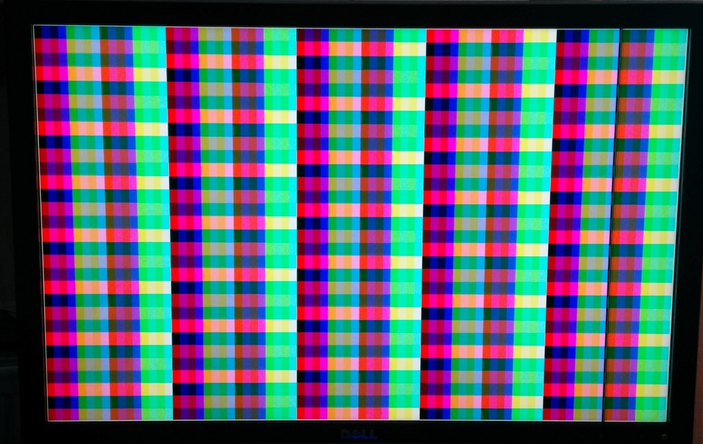
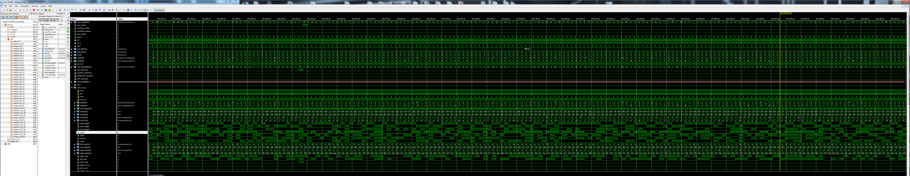

Мои проекты
В этом разделе приводится краткое описание проектов, над которыми я работал/работаю.
Характер моей работы и должностные инструкции не позволяют мне публиковать или обсуждать с кем-либо какие-либо сведения о моей работе, но я выложил здесь описание нескольких проектов, сделанных на предыдущем месте работы (где не было подобных ограничений), а также несколько проектов, которые я сделал just for fun, в свободное время.
Проекты сгруппированы по типам: в разделе “Software” приведены чисто программные проекты, в разделе “Hardware/Software” приведены проекты устройств, в которых я разрабатывал как схемотехнику, так и прошивку. Проекты FPGA вынесены в отдельный раздел.
Для некоторых проектов доступны исходники (не для всех). Например, если проект был сделан на работе, то права на него принадлежат работодателю, и исходников нет и не будет. Однако, если вас заинтересовал тот или иной проект, вы можете задавать мне любые вопросы, постараюсь ответить всем.
Software
FPGA
Hardware/Software
Software
LLVM

Я занимаюсь разработкой оптимизирующего компилятора (бэкенда) на основе инфрастуктуры компиляторов LLVM, и неплохо знаю эту систему.
Ниже приведены ссылки на литературу по LLVM:
Mayur Pandey, Suyog Sarda «LLVM Cookbook», 284 стр, англ. язык.
Bruno Cardoso Lopes «Getting Started with LLVM Core Libraries», 314 стр., англ. язык.
Tutorial: Creating an LLVM Backend for the Cpu0 Architecture
Литературы по LLVM очень мало, для полноценной разработки бэкенда этого не хватит. Поэтому, если вы хотите разработать свой бэкенд LLVM, вам придётся разбираться с исходниками существующих бэкендов и с исходниками LLVM Core Library. И разумеется, опыт имеет ключевое значение.
Если у вас есть вопросы по LLVM, обращайтесь, постараюсь ответить.
Среда разработки для ПЛК

Этим проектом я занимался очень давно, это была разработка собственного ПЛК. Среда разработки позволяет пользователю разрабатывать программу для ПЛК в графическом виде (ближайший аналог - язык FBD стандарта IEC 61131-3), собирая её из логических блоков, аналогично принципиальной схеме. Среда также позволяет эмулировать работу схемы.

Ещё один скриншот

Свидетельство о государственной регистрации
ModbusEasy

Утилита (Windows, интерфейс - командная строка), реализующая протокол Modbus, как в режиме Slave, так и в режиме Master. Позволяет принимать и передавать произвольные команды Modbus, как в "ручном" режиме, так и периодически, по таймеру, вести лог, в планах было также подключение к базе данных. Программа написана на C# и работает под Windows, но в принципе, возможно её портирование на Linux.
Так как в настоящее время я не занимаюсь ПЛК и промышленной автоматикой, проект заморожен. Ссылка на репозиторий
Логгер

Логгер позволяет собирать данные через интерфейс OPC (возможно подключение любого OPC-сервера) и отображать в графическом виде. Все параметры графиков настраиваются, есть увеличение/уменьшение масштаба отображения.Разные утилиты
Также в моём блоге вы сможете найти описания и мсходники разных небольших утилит:Генерация файлов .mif и Case-конструкций
Еще одна программа сбора данных
И разные статьи:Использование Reflection для динамического создания компонентов в C#
XML-сериализация IP-адреса в C#
FPGA
Проект видеокарты

Open-source видеокарта на Verilog.
Проект в стадии разработки.
Ссылки на записи в блоге:
Проект FPU

Open-source FPU на Verilog, 32 и 64 разряда. В настоящее время реализованы арифметические операции (сложение, умножение и деление).
Проект в стадии разработки.
Ссылки на записи в блоге:
FPU. Часть 4. Умножитель, тест и RTL
FPU. Часть 5. Сумматор, тест и RTL
Разные записи по FPGA и Verilog
Hardware/Software
Проект FPU